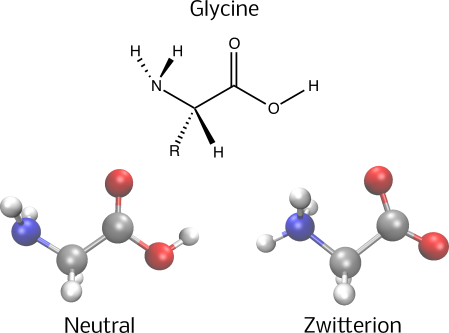
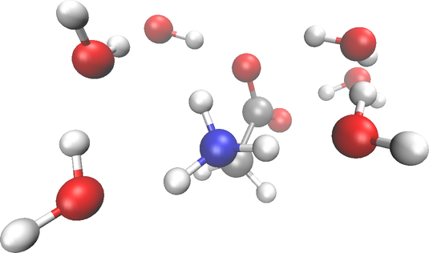

try:
import tangelo
except ModuleNotFoundError:
!pip install git+https://github.com/goodchemistryco/Tangelo.git@develop --quiet
!pip install qulacs pyscf rdkit openbabel-wheel --quietThe QM/MM method: Solvation of the Glycine Amino Acid
The QM/MM method: Solvation of the Glycine Amino Acid
Introduction
Principles of the QM/MM method
In 2013, the Nobel Prize in Chemistry was awarded to Martin Karplus, Michael Levitt, and Arieh Warshel for their groundbreaking work in advancing the understanding of complex chemical systems. Their achievement was centered around the development of multiscale models, a significant milestone in the field of computational chemistry. Specifically, their work highlighted the QM/MM method, an abbreviation for Quantum Mechanics/Molecular Mechanics. Introduced in 1976 in the Journal of Molecular Biology, it amalgamates quantum mechanics, which describes the behavior of particles at the electronic level, with molecular mechanics, a classical approach that uses forcefields to model interatomic interactions. The introduction of this method became a cornerstone in biochemical simulation workflows, allowing scientists to simulate and understand complex chemical reactions occurring within biological contexts with remarkable accuracy. Its primary objective remains the reduction of computational cost in modeling intricate chemical systems, useful in the study of biochemical entities like DNA/RNA strands, proteins, and organic molecules.
Consider protein simulations as a case in point: the majority of proteins consist of 50 to 200 amino acids (source). With an average of approximately 19 atoms per amino acid, a solitary protein system might necessitate the consideration of anywhere between 950 to 3800 atoms. This estimate however does not take into account solvents, ions, and other vital molecular species that could be important in the simulation model.
This problem size is quite typical in many molecular mechanics workflows. Nonetheless, handling interactions like charge transfers or hydrogen bonds, which are pivotal in protein/drug interactions, can pose challenges when using forcefield-based methods. In such scenarios, the nuanced description of these molecular interactions is better represented via quantum mechanics. However, the problem size becomes intractable for quantum mechanics methods alone. Hence, the fusion of both realms has been beneficial for the computational chemistry community and forms the essence of the QM/MM approach.
Quantum mechanical methods
Molecules reside within the microscopic realm and adhere to the principles of the Schrödinger equation. For more introductory material on modeling molecular systems, please refer to our previous notebook.
Quantum computing research is rapidly advancing on both software and hardware fronts. Chemistry stands out as a promising application for these devices, propelling an active research field, exemplified further in the paper reviews by Kassal et al. and Cao et al.. Harnessing QM/MM methodologies within quantum computing simulations holds promise in capturing crucial environmental effects, such as solvent interactions, enriching the accuracy and realism of computational models [1, 2].
Computing solvation energies
We apply this approach to the explicit solvation of a simple amino acid (glycine) in water through electrostatic embedding. To determine solvation energies for chemical compounds, the following steps are taken in this notebook: 1. Compute the molecular energies of isolated compounds using a quantum algorithm. For the sake of simplicity, the quantum algorithm used here is the Variational Quantum Eigensolver (VQE). Other quantum solvers available in Tangelo have already been or can be integrated with QM/MM. 2. Calculate the molecular energies of solvated compounds. In this step, the QM/MM problem decomposition method models the glycine amino acid using VQE, similar to the previous step. Meanwhile, explicit water molecules are modeled through molecular mechanics. 3. Determine the energy differences that signify solvation energy. A more negative energy denotes a stronger interaction between the solvent and the molecule.
Use-case: Solvation of the glycine animo acid
Preparation for the notebook
The next cells ensure that the appropriate packages are installed and imported into the Python environment to successfully execute this notebook.
# Tangelo common imports.
from tangelo import SecondQuantizedMolecule
from tangelo.algorithms.variational import VQESolver, BuiltInAnsatze
from tangelo.toolboxes.molecular_computation.frozen_orbitals import get_orbitals_excluding_homo_lumo
from tangelo.toolboxes.molecular_computation.molecule import atom_string_to_list
# QM/MM-related imports.
from tangelo.problem_decomposition.qmmm.qmmm_problem_decomposition import QMMMProblemDecomposition
from tangelo.problem_decomposition.oniom._helpers.helper_classes import Fragment, Link
from tangelo.toolboxes.molecular_computation.mm_charges_solver import MMChargesSolverRDKit
# Basis set used in this notebook.
basis = "cc-pvdz"
# Constants.
ha_to_kcalmol = 627.509
cal_to_j = 4.184Amino acid tautomers
Amino acids form the basic building blocks of polypeptides and proteins within living organisms. While nature encompasses about 500 variations, only 22 are encoded in the genetic blueprint of life. These molecules are characterized by their end-capping functional groups: an amine (NH\(_3\)) and a carboxylic acid (COOH), with a central functional group denoted as ‘R’ that defines the unique properties of each amino acid.
This notebook primarily focuses on employing computational techniques that integrate quantum mechanics with molecular mechanics (QM/MM). This method allows researchers to explore interactions among molecules within aqueous solutions, providing essential insights into the behaviors and functionalities of proteins at a reasonable computational cost.
Our initial step involves defining the atomic coordinates of glycine, the simplest amino acid with a ‘R’ functional group consisting solely of a hydrogen atom. Given the extensive computational requirements for running a full quantum algorithm on the entire system, this notebook opts to freeze certain molecular orbitals, therefore simplifying the simulation to manage its complexity.
xyz_glycine = """
C 2.05388 0.61558 0.07379
O 1.96483 -0.57096 -0.21241
O 3.19750 1.18239 0.43269
H 3.96112 0.54040 0.42260
C 0.91678 1.61052 0.03784
H 0.94914 2.17916 0.95644
H 1.13065 2.30136 -0.76945
N -0.39578 0.99717 -0.14991
H -0.70125 0.48980 0.67086
H -0.41063 0.36439 -0.94717
"""
# Creating a molecule object from the coordinates.
glycine = SecondQuantizedMolecule(xyz_glycine, basis=basis)
# Setting the active space to HOMO-1 to LUMO+1.
frozen_orbitals_gly = get_orbitals_excluding_homo_lumo(glycine, homo_minus_n=1, lumo_plus_n=1)
glycine.freeze_mos(frozen_orbitals_gly, inplace=True)
print(f"The neutral form of GLY will be described by an active space of {glycine.n_active_mos} molecular orbitals and {glycine.n_active_electrons} electrons.")The neutral form of GLY will be described by an active space of 4 molecular orbitals and 4 electrons.One might wonder why this amino acid dissolves in water despite being a neutral organic compound. The reason lies in its behavior when in water; evidences show that amino acids adopt a zwitterionic form [3-6]. Although the entire molecule remains electrically neutral, a hydrogen atom shifts from the carboxylic acid group to the amine group, showcasing a form of tautomerism. Thus, to precisely model the interaction of water with glycine, it is crucial to include the equivalent tautomer in the calculations of solvation properties.
In the next cell, we construct this chemical structure while using the same approach of freezing certain molecular orbitals.
xyz_zwitterion = """
C -0.72588 -0.48930 -0.87995
O -0.40429 -0.99901 0.24400
O -1.71249 -0.74617 -1.57606
C 0.24065 0.58647 -1.40746
H 0.94067 0.15610 -2.10976
H -0.32329 1.37177 -1.87959
N 0.99940 1.14332 -0.24215
H 1.19967 0.36262 0.37817
H 1.91733 1.52621 -0.51811
H 0.35328 1.80600 0.26884
"""
# Creating a molecule object from the coordinates.
zwitterion = SecondQuantizedMolecule(xyz_zwitterion, basis=basis)
# Setting the active space to HOMO-1 to LUMO+1.
frozen_orbitals_zwit = get_orbitals_excluding_homo_lumo(zwitterion, homo_minus_n=1, lumo_plus_n=1)
zwitterion.freeze_mos(frozen_orbitals_zwit)
print(f"The zwitterion form of GLY will be described by an active space of {zwitterion.n_active_mos} molecular orbitals and {zwitterion.n_active_electrons} electrons.")The zwitterion form of GLY will be described by an active space of 4 molecular orbitals and 4 electrons.With the molecules now encoded as Tangelo objects, we’re ready to perform quantum chemistry calculations. Below is a visual representation illustrating the two distinct tautomers of the glycine amino acid that we previously constructed.

Using quantum algorithms on the glycine molecule
The following code cell defines the options passed to our quantum solver (for simplicity, the well-known Variational Quantum Eigensolver (VQE) with a UCCSD ansatz). These settings are applied in subsequent energy computations.
vqe_options= {
"ansatz": BuiltInAnsatze.UCCSD,
"qubit_mapping": "scBK",
"up_then_down": True
}We then run the quantum solver for both forms of glycine. We are particularly interested in the total molecular energies obtained, as they are necessary to calculate the hydration energy later on (see step 1 outlined in the “Computing solvation energies” section above).
quantum_solver_gly = VQESolver({"molecule": glycine, **vqe_options})
quantum_solver_gly.build()
e_quantum_gly = quantum_solver_gly.simulate()
print(f"The gas phase molecular energy of glycine (neutral) is {e_quantum_gly:.5f} Ha.")The gas phase molecular energy of glycine (neutral) is -282.85661 Ha.quantum_solver_zwit = VQESolver({"molecule": zwitterion, **vqe_options})
quantum_solver_zwit.build()
e_quantum_zwit = quantum_solver_zwit.simulate()
print(f"The gas phase molecular energy of glycine (zwitterion) is {e_quantum_zwit:.5f} Ha.")The gas phase molecular energy of glycine (zwitterion) is -282.79736 Ha.Since tautomers have the same set of atoms, comparing the two molecular energies indicates that the neutral form of the glycine amino acid is more stable than the zwitterion. This outcome aligns with the fact that formal charges on atoms in the gas phase are difficult to generate due to the lack of an environment for stabilization.
We now have access to the molecular energies of each tautomer. We now sample the energy of the molecular system consisting of a cluster of water around the molecules (see step 2 outlined in the “Computing solvation energies” section above). The energy differences \(\Delta E_{\text{solv}}\) (after removing the water molecule potential energy contributions) should be proportional to the free energies of solvation \(\Delta H_{\text{solv}}\) or \(\Delta G_{\text{solv}}\) measured in laboratories.
The remaining steps taken in this notebook are revolving around computing the molecular energies of those clusters using the QM/MM method, which is a simplified version of a more complete study as reported in [7].
Preparing the QM/MM calculation: get the partial charges for \(H_2O\)
The supported QM/MM framework in Tangelo needs the partial charges for the part of the system described via molecular mechanics. This is what we do in the next code cell. Here, in summary: - A mean-field calculation is performed for a single water molecule; - The Mulliken atomic charges are retrived from the analyze method; - A function is defined to construct an array in the [(partial_charge, (x, y, z)), ...] format.
xyz_h2o = """
O -2.08448 -2.25652 -0.22848
H -2.35312 -3.17615 -0.12238
H -1.83562 -1.85666 0.64078
"""
h2o = SecondQuantizedMolecule(xyz_h2o, basis=basis)
(_, mulliken_atomic_charges), _ = h2o.mean_field.analyze()
def get_charges(water_molecule_coords):
xyz_h2os = atom_string_to_list(water_molecule_coords)
mulliken_charges_waters = [*mulliken_atomic_charges] * (len(xyz_h2os) // len(mulliken_atomic_charges))
return [(q, xyz_h2os[i][1]) for i, q in enumerate(mulliken_charges_waters)]
print(f"The Mulliken partial charges computed from an Hartree-Fock calculation in {basis} are\nO = {mulliken_atomic_charges[0]}\nH1 = {mulliken_atomic_charges[1]}\nH2 = {mulliken_atomic_charges[2]}.")The Mulliken partial charges computed from an Hartree-Fock calculation in cc-pvdz are
O = -0.6346652155730794
H1 = 0.3194372332962432
H2 = 0.31522798227682913.Computing the solvation energies using QM/MM with charge embedding
The next task involves computing solvated molecule energies using the QM/MM electrostatic embedding method. Using the previously calculated water atomic charges, the QMMMProblemDecomposition class consolidates necessary information for this calculation. This includes: - “geometry”: Coordinates of the molecule in a list format. - “mmpackage”: Molecular mechanics package utilized. - “charges”: Electrostatic charges and their coordinates. - “qmfragment”: A Fragment object defining the solver and related options for computing the molecular energy in quantum mechanics.
It’s worth noting the various methods available for generating water cluster geometries. The following geometries were created by randomly positioning three water molecules around each terminal and subsequently optimized using the AMBER94 force field. This optimization step can be done with any molecular mechanics package, like OpenMM or RDKit. An illustration showcasing one of the generated conformations is presented in the figure below.

xyz_waters_gly = """
O -2.08448 -2.25652 -0.22848
H -2.35312 -3.17615 -0.12238
H -1.83562 -1.85666 0.64078
O -0.29165 -1.17766 -1.97014
H 0.55770 -1.31516 -1.52416
H -0.98020 -1.66830 -1.47470
O 4.62948 -0.92998 0.20740
H 5.09272 -1.49221 0.83838
H 3.79167 -1.33448 -0.07876
O -2.80676 2.14474 -0.62525
H -1.85118 1.90309 -0.45829
H -2.93359 2.38421 -1.55080
O -1.81568 -0.72927 1.87434
H -1.84048 -0.80009 2.83473
H -2.66617 -0.33065 1.49202
O -3.76770 0.00135 0.46835
H -3.57200 0.87852 0.03795
H -3.59648 -0.71670 -0.16049
"""
qmmm_model_gly = QMMMProblemDecomposition({
"geometry": atom_string_to_list(xyz_glycine),
"mmpackage": "rdkit",
"charges": get_charges(xyz_waters_gly),
"qmfragment": Fragment(solver_high="vqe",
options_high={"basis": basis, "frozen_orbitals": frozen_orbitals_gly, **vqe_options})
})
e_qmmm_gly = qmmm_model_gly.simulate()
print(f"The hydration energy for glycine (neutral) is {(e_qmmm_gly-e_quantum_gly) * ha_to_kcalmol * cal_to_j:5.0f} kJ/mol.")The hydration energy for glycine (neutral) is -136 kJ/mol.xyz_waters_zwit = """
O -2.33478 0.43459 1.56814
H -1.65671 -0.25663 1.45580
H -3.11977 0.14754 1.04111
O 3.57502 1.26874 -0.76381
H 3.59649 0.47309 -0.17203
H 4.40577 1.75433 -0.74479
O -0.93902 2.44112 0.89259
H -1.06155 3.25709 1.38776
H -1.58516 1.71621 1.19305
O -3.99606 -0.58515 -0.21107
H -4.64697 -0.10084 -0.73262
H -3.23854 -0.83634 -0.78921
O 3.12434 -0.68537 0.90701
H 3.33270 -0.62390 1.84641
H 2.63054 -1.54344 0.73112
O 1.55389 -2.64818 0.61476
H 0.69747 -2.15400 0.51558
H 1.54074 -3.48659 0.14319
"""
qmmm_model_zwit = QMMMProblemDecomposition({
"geometry": atom_string_to_list(xyz_zwitterion),
"mmpackage": "rdkit",
"charges": get_charges(xyz_waters_zwit),
"qmfragment": Fragment(solver_high="vqe",
options_high={"basis": basis, "frozen_orbitals": frozen_orbitals_zwit, **vqe_options})
})
e_qmmm_zwit = qmmm_model_zwit.simulate()
print(f"The hydration energy for glycine (zwitterion) is {(e_qmmm_gly-e_quantum_zwit) * ha_to_kcalmol * cal_to_j:5.0f} kJ/mol.")The hydration energy for glycine (zwitterion) is -292 kJ/mol.It’s important to note that we haven’t deducted the potential energy contribution of water molecules. This omission is intentional based on the PySCF backend used in this study, as outlined in its QM/MM documentation. In PySCF’s implementation, the calculated total energy doesn’t include the static Coulomb interactions of MM point charges, MM energy, vdw interaction, or other bonding/non-bonding effects between QM and MM particles. Tangelo supports other chemistry backends, including Psi4, and users should refer to the relevant backend documentation to confirm energy contributions and understand the output.
The results indicate negative energy differences, suggesting stabilization for both forms of the glycine amino acid in aqueous solutions. Experimental \(\Delta H_{\text{solv}}\) is approximately 122 kJ/mol (Russian Journal of General Chemistry, 2008, 78, 6, 1155 - 1160). While we’re not directly computing free energy differences (for example, we didn’t include entropic effects), our results fall within a similar order of magnitude. Notably, the zwitterion form exhibits enhanced stabilization by the water shell, attributed to water’s polar nature, which enhances its ability to solvate polar molecules.
Closing words
This notebook serves as an introductory exploration of the QM/MM method applied to biochemical systems within aqueous environments, demonstrating how quantum algorithms in Tangelo can be applied to such applications.
By examining glycine tautomers and stability differences, it showcases the potential of QM/MM for studying solvated systems. We demonstrated that QM/MM + VQE calculations are able to show both forms of the glycine amino acid are stabilized in aqueous solutions. Although we didn’t directly compute free energy differences, our results roughly align with experimental data, notably indicating the zwitterion’s enhanced stabilization by the water shell due to water’s inherent polarity.
Like other problem decomposition techniques available in Tangelo (ONIOM, DMET, etc), the QM/MM implementation gives users the freedom to select and integrate quantum algorithms tailored to their research needs. In this tutorial, we simply used VQE as the fragment solver, but the QM/MM method can be paired with other quantum or classical solvers in Tangelo. Users can tailor quantum algorithms to their biochemical systems, optimizing their computational approach based on the nature and complexity of the problem at hand.
What will you do with QM/MM and Tangelo ?
References
- Liu, H.; Low, G.H.; Steiger, D.S.; Häner, T.; Reiher, M.; Troyer, M. Prospects of quantum computing for molecular sciences. Materials Theory. 2022, 6, 11.
- Izsák, R.; Riplinger, C.; Blunt, N.S.; de Souza, D.; Holzmann, N.; Crawford, O.; Camps, J.; Neese, F.; Schopf, P. Quantum computing in pharma: A multilayer embedding approach for near future applications. J. Comput. Chem. 2023, 44(3), 406.
- Jensen, J.H.; Gordon, M.S. On the Number of Water Molecules Necessary To Stabilize the Glycine Zwitterion. J. Am. Chem. Soc. 1995, 117, 8159-8170.
- Fernandez-Ramos, A.; Smedarchina, Z.; Siebrand, W.; Zgierski, M.Z. A direct-dynamics study of the zwitterion-to-neutral interconversion of glycine in aqueous solution. J. Chem. Phys. 2000, 113, 9714-9721.
- Valverde, D.; da Costa Ludwig, Z.M.; da Costa, C.R.; Ludwig, V.; Georg, H. C. Zwitterionization of glycine in water environment: Stabilization mechanism and NMR spectral signatures. J. Chem. Phys. 2018, 148, 024305.
- Bhate, M.P.; Woodard, J.C.; Mehta M.A. Solvation and Hydrogen Bonding in Alanine- and Glycine-Containing Dipeptides Probed Using Solution- and Solid-State NMR Spectroscopy. J. Am. Chem. Soc. 2009, 131, 27, 9579-9589.
- Takenaka, N.; Kitamura, Y.; Koyano, Y.; Asada, T.; Nagaoka, M. Reaction path optimization and vibrational frequency analysis via ab initio QM/MM free energy gradient (FEG) method: Application to isomerization process of glycine in aqueous solution. Theor. Chem. Acc. 2011, 130, 215-226.